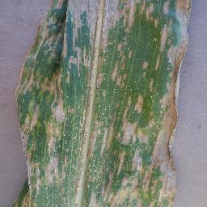
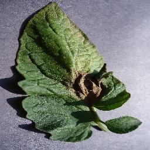
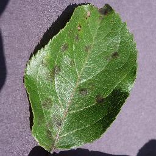

叶片病害识别
上传一张叶片照片，AI 帮你判断病害类型
点击或拖拽叶片照片到此处
支持 JPG / PNG，单张不超过 10 MB
选择图片后「开始识别」按钮自动可用
主题「田野翠绿」Field Fresh ｜ 依据 docs/02_UIUX设计.md V2.0 实现 ｜ 共 5 个画板
上传一张叶片照片，AI 帮你判断病害类型
选择图片后「开始识别」按钮自动可用

叶片上出现长条形、边缘与叶脉平行的灰褐色病斑，后期病斑融合成片，导致叶片大面积枯死，影响光合作用与产量。
选用抗病品种；收获后清除田间病残体并深翻；合理密植保证通风；发病初期及时喷施杀菌剂，7–10 天一次，连喷 2–3 次。
共 128 条识别记录
| 文件名 | 识别结果 | 置信度 | 时间 | 操作 | |
|---|---|---|---|---|---|
| corn_gray_leaf_spot.jpg | 玉米灰斑病 | 98.8% | 2026-10-14 16:12 | 查看 删除 | |
 |
tomato_late_blight.jpg | 番茄晚疫病 | 97.4% | 2026-10-14 15:48 | 查看 删除 |
| tomato_healthy.jpg | 番茄（健康） | 99.6% | 2026-10-13 18:02 | 查看 删除 | |
 |
apple_scab.jpg | 苹果黑星病 | 96.1% | 2026-10-13 16:41 | 查看 删除 |
覆盖 14 种作物 / 38 类病害与健康状态
叶片出现与叶脉平行的长条形灰褐病斑，后期融合枯死。
查看详情叶缘出现水渍状暗绿斑，湿度高时迅速扩大并生白霉。
查看详情叶片正面产生橄榄色绒状霉斑，后期变黑褐并引起落叶。
查看详情叶片现褐色圆形斑点，边缘深褐，果实受害后干缩成僵果。
查看详情叶片斑驳黄化、叶脉黄化，树势衰退，属检疫性病害。
查看详情叶色浓绿均匀，无病斑、无萎蔫，叶形舒展。
查看详情